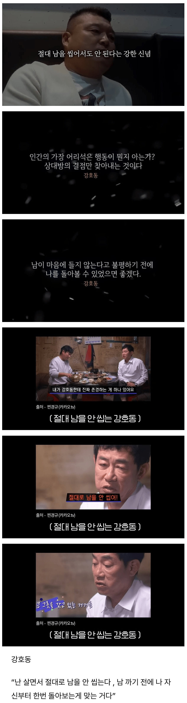

ㅋㅋ

ㅋㅋ
손(발)
저 반대가 김구란가
씹을정도로 마음에 안드는 놈은 아무래도...
입보다 주먹이 빠르다?
난 말로 안 해
남을 까기 전에 깨부수는게 빠름
(발로)까기
찾아보면 누구 씹는 장면도 있을만한데ㅋㅋㅋㅋㅋ
왜 뒤에서 남을 까 직접 까면 바로 해결가능인데 ㅋㅋㅋㅋㅋㅋㅋㅋ
(뒤에서 깔 일이 없음)
진짜 어려운일인데
패면되는데 왜까
남 까기 전에 내 (타격) 자세부터 한 번 돌아보는 게 맞는거다
수근: 형님 제발 말로 하세요